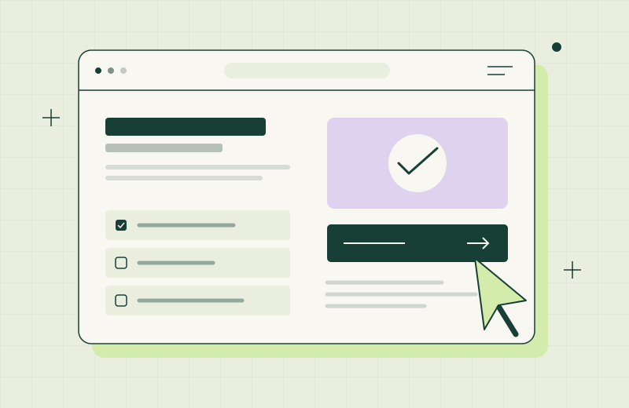
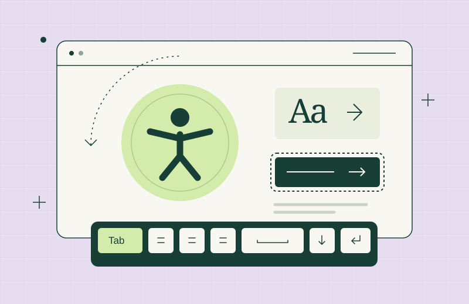
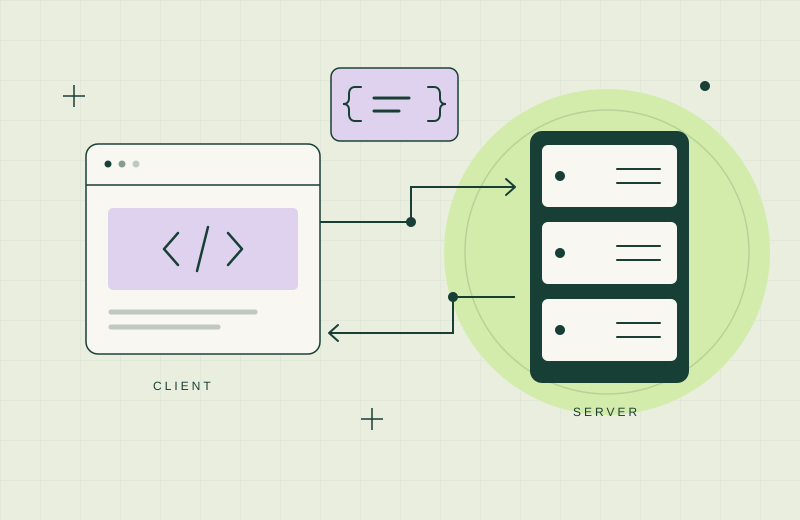

Technical interests
Where my
curiosity goes.
The ideas I’m exploring through my studies, and the skills I’d like to take further on placement.
01 — 03
01 / From structure to interaction
Interactive
web experiences.
I’m interested in how a page becomes an experience people can interact with. Studying HTML, CSS and the JavaScript DOM has helped me connect a page’s structure with its appearance and behaviour. I enjoy exploring how CSS selectors, querySelector, functions and loops can support clear interfaces.
I’d like to develop this interest through small projects with a practical purpose: organising information, helping someone complete a task or making navigation feel more intuitive. My focus is on interactions that make a site easier to use.

02 / Designing with people in mind
Accessibility &
inclusive design.
I’m interested in building websites that more people can use comfortably. Learning about semantic HTML, ARIA and accessibility APIs has made me think beyond visual layout, including how someone navigates with a keyboard or understands an interface through a screen reader.
I want accessibility to become a consistent part of how I approach a project. That means paying attention to meaningful structure, clear labels, visible focus and understandable feedback, while continuing to learn when native HTML is sufficient and when ARIA can help.

03 / Understanding what happens underneath
Programming &
connected systems.
Java has introduced me to the discipline of breaking a problem into smaller, understandable steps. I’m interested in how operators, decisions, loops and methods work together to produce predictable behaviour, and how clear structure makes a program easier to improve.
I’m also curious about the relationship between the client and the server: what happens in a browser, what belongs on a server and how information moves between them. I’d like to connect these foundations through practical applications as my studies progress.
From an interest to an idea.
Explore my portfolio ↗